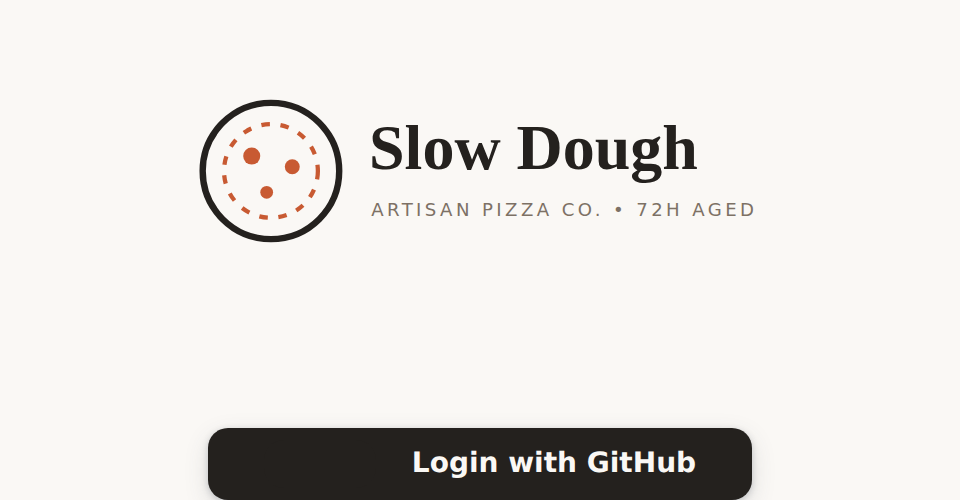
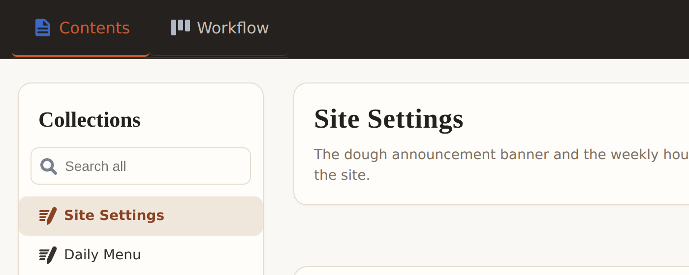
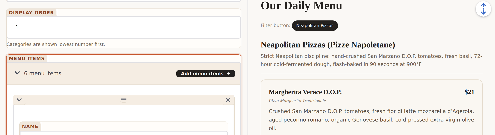
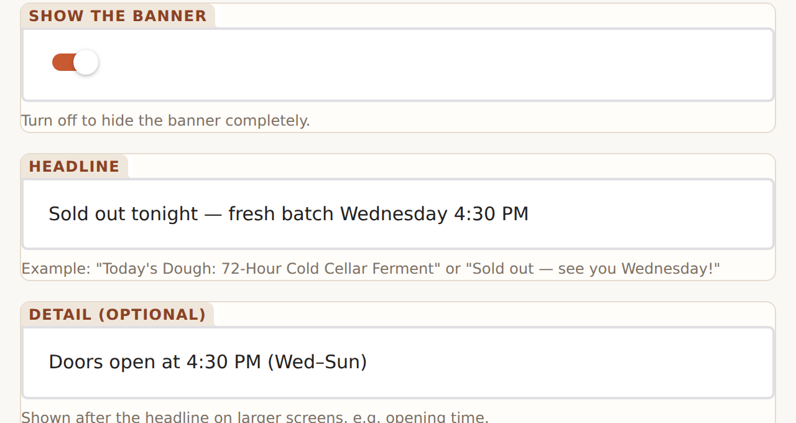
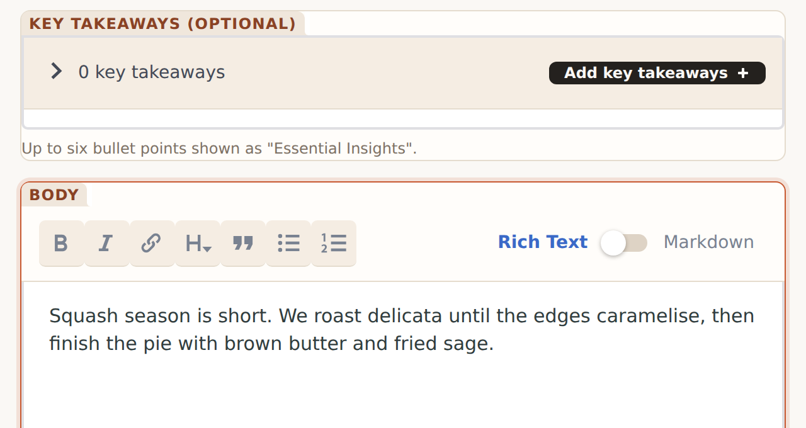
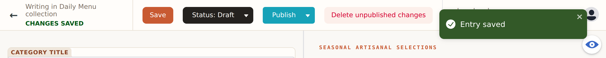
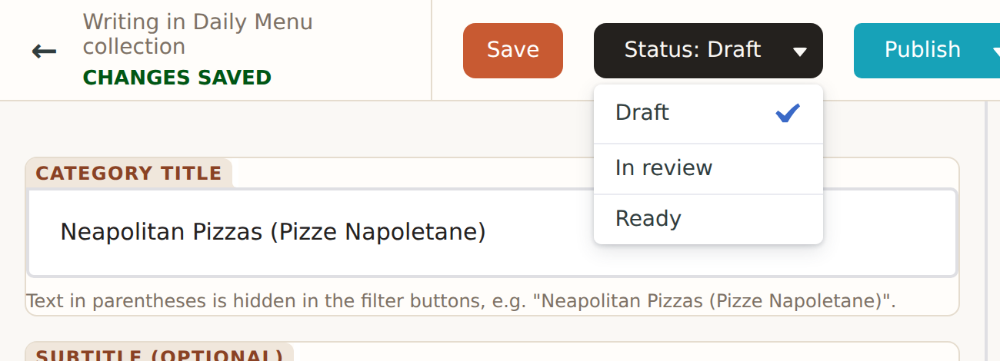
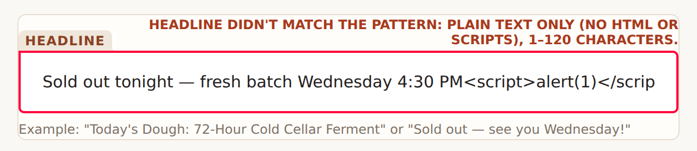
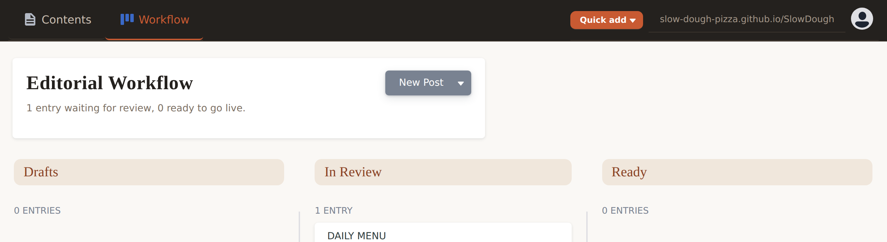

<b>, <script>) or is too long. Remove it and save again — nothing is lost.
| Status | Meaning |
|---|---|
| Draft | Saved, visible only in the admin. Keep editing freely. |
| In review | Waiting for the reviewer to approve. |
| Ready | Approved / final — about to be published. |
| Published | Merged; the site rebuilds and goes live in ~2 min. |
19 or 19.5. Dates use the calendar picker.